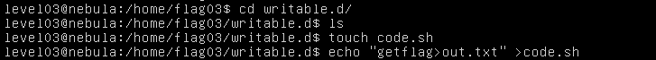
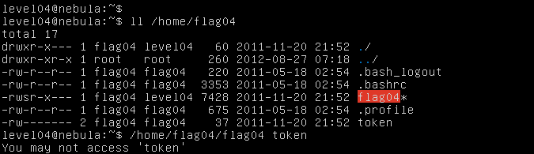
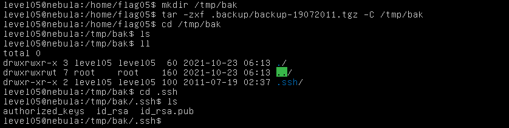
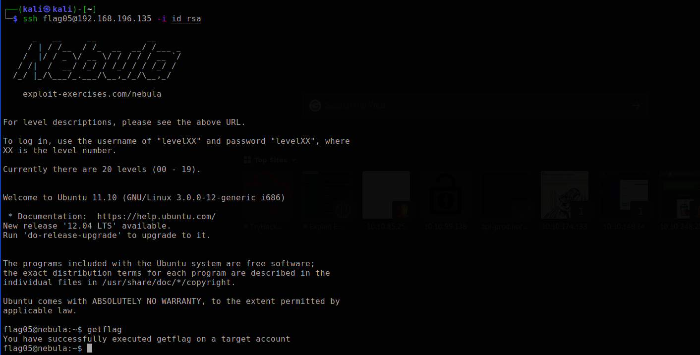

#include <stdlib.h>
#include <unistd.h>
#include <string.h>
#include <sys/types.h>
#include <stdio.h>
int main(int argc, char **argv, char **envp)
{
gid_t gid;
uid_t uid;
gid = getegid();
uid = geteuid();
setresgid(gid, gid, gid);
setresuid(uid, uid, uid);
system("/usr/bin/env echo and now what?");
}char *buffer;
The group id , user id of the current user is copied into the gid and uid using the getegid() and geteuid() functions. (Get Effective group id and Get Effective User id functions)
gid = getegid();
uid = geteuid();gid = getegid();
Then the setresgid, setresuid functions are used to set gid and uid of the current user. setresgid - set real, effective and saved user or group ID setresuid - set real, effective and saved user or user ID
uid = geteuid();system("/usr/bin/env echo and now what?");
Echo command is used to print "and now what?"
We here can make use of shell functions.
Find out how to export shell funtions. Which command here can be changed into a shell function that is called by the program itself ?
You may need to use bash to solve this level.
Create a shell function called /usr/bin/env(). Use the function to run the getflag command.
We can either change the environment variables or use shell funtions for this level. We will be using shell functions.
Create the function using
function /usr/bin/env() { getflag; }
Now we will have to export the function and execute the program usingexport -f /usr/bin/env
./flag01

level02
Username : level02
Password : level02
There is a vulnerability in the below program that allows arbitrary programs to be executed, can you find it?
Files for this level can be found in /home/flag02.
Source Code
#include <stdlib.h>
#include <unistd.h>
#include <string.h>
#include <sys/types.h>
#include <stdio.h>
int main(int argc, char **argv, char **envp)
{
char *buffer;
gid_t gid;
uid_t uid;
gid = getegid();
uid = geteuid();
setresgid(gid, gid, gid);
setresuid(uid, uid, uid);
buffer = NULL;
asprintf(&buffer, "/bin/echo %s is cool", getenv("USER"));
printf("about to call system(\"%s\")\n", buffer);
system(buffer);
}char *buffer;
A character pointer is declared. (Can be used to store strings.) The group id , user id of the current user is copied into the gid and uid using the getegid() and geteuid() functions. (Get Effective group id and Get Effective User id functions)
gid = getegid();
uid = geteuid();setresgid(gid, gid, gid);
Then the setresgid, setresuid functions are used to set gid and uid of the current user. setresgid - set real, effective and saved user or group ID setresuid - set real, effective and saved user or user ID
setresuid(uid, uid, uid);buffer = NULL; asprintf(&buffer, "/bin/echo %s is cool", getenv("USER")); printf("about to call system(\"%s\")\n", buffer);
The character string is set to null and the string "USER is cool" is copied into the "buffer" string which is print out in the next command using the printf() function. Where "USER" is substituted by the environment variable USER. To see the USER environment variable, just runenv | grep USER
Then, the system() function is used to execute the "buffer" string.system(buffer);
i.e In this case it will execute "echo level02 is cool".
Manipulate an environment variable
The program is executing a line of command for us. Think what all to add to the environment variable so that we can execute what we want.
Change the environment varibale to include multiple commands.
We will be changing the environment variable USER which is used by the program .
Multiple commands can be executed in one line using " ; ".
Change the USER environment variable and execute the program by :
USER=hello\;getflag\;echo

The reason for such behaviour is the code that is executed by the c program using the system() fucntion. The code that is executed is :
echo hello ;getflag ;echo is cool
Allowing us to execute getflag.
level03
Username : level03
Password : level03
Check the home directory of flag03 and take note of the files there. There is a crontab that is called every couple of minutes.
Files for this level can be found in /home/flag03.

The writable.sh is executed every couple of minutes.
writable.sh
Every file in /home/flag03/writable.d, is executed and then removed.
ulimit -t : ulimit limits the resource usage of a process. The -t 5 sets the time limit to 5 seconds.
bash -x: Prints the command before executing it. This mode is very useful when debuggging code.
You just need to add a file to the writable.d folder
You need to add a file into writable.d directory that executes the getflag for us. And as proof that it was executed, redirect the output into the out.txt file in the parent directory.
A file called code.sh is created and "getflag > out.txt" is written into it.
When executed, the the ouput of the getflag is redirected to out.txt

level04
Username : level04
Password : level04
This level requires you to read the token file, but the code restricts the files that can be read. Find a way to bypass it :)
Files for this level can be found in /home/flag04.
Source Code
#include <stdlib.h>
#include <unistd.h>
#include <string.h>
#include <sys/types.h>
#include <stdio.h>
#include <fcntl.h>
int main(int argc, char **argv, char **envp)
{
char buf[1024];
int fd, rc;
if(argc == 1) {
printf("%s [file to read]\n", argv[0]);
exit(EXIT_FAILURE);
}
if(strstr(argv[1], "token") != NULL) {
printf("You may not access '%s'\n", argv[1]);
exit(EXIT_FAILURE);
}
fd = open(argv[1], O_RDONLY);
if(fd == -1) {
err(EXIT_FAILURE, "Unable to open %s", argv[1]);
}
rc = read(fd, buf, sizeof(buf));
if(rc == -1) {
err(EXIT_FAILURE, "Unable to read fd %d", fd);
}
write(1, buf, rc);
}
if(argc == 1) {
printf("%s [file to read]\n", argv[0]);
exit(EXIT_FAILURE);
}
Argc is the number of command line arguments used while executing the program including the name of the c program . So if there are no command line arguments, argc = 1.
The above condition checks whether there were any command line arguments while executing the program and if there are none, prints the correct way to use this executable.
if(strstr(argv[1], "token") != NULL) {
printf("You may not access '%s'\n", argv[1]);
exit(EXIT_FAILURE);
}
argv is the list of command line arguments including the name of the program where argv[0] is the name of the program and the rest are the command line arguments.
Strstr() function checks for the occurance of a string within another string.

If the command line argument specified (which is the file to be read according to this program) contains the string "token" in it, it denies access to the file as shown above.
fd = open(argv[1], O_RDONLY);
if(fd == -1) {
err(EXIT_FAILURE, "Unable to open %s", argv[1]);
}
rc = read(fd, buf, sizeof(buf));
if(rc == -1) {
err(EXIT_FAILURE, "Unable to read fd %d", fd);
}
The file specified is opened and any error in opening or reading the file is checked for and results in program temination.
write(1, buf, rc);
If no error are encountered, the file read is printed.
Think of other ways to point to a file. You know about it if you know linux basics.
We will be using links to refer to the token file.

To execute getflag, we need to switch to the flag04 account. So we can switch to flag04 using the content of the token file as password and execute getflag.

level05
Username : level05
Password : level05
Check the flag05 home directory. You are looking for weak directory permissions. To do this level, log in as the level05 account with the password level05. Files for this level can be found in /home/flag05.

Use the ssh key to login to the appropriate account.
Use the ssh -i command.
Extract the file found in the .backup file using the tar command.

-C option of the tar command lets you extract the file to a specific directory.
The ssh key (id_rsa) can be used to login to the flag05 account after which the getflag command can be executed.
I couldn't ssh to flag05 account so i had to use another machine to ssh into the account.
